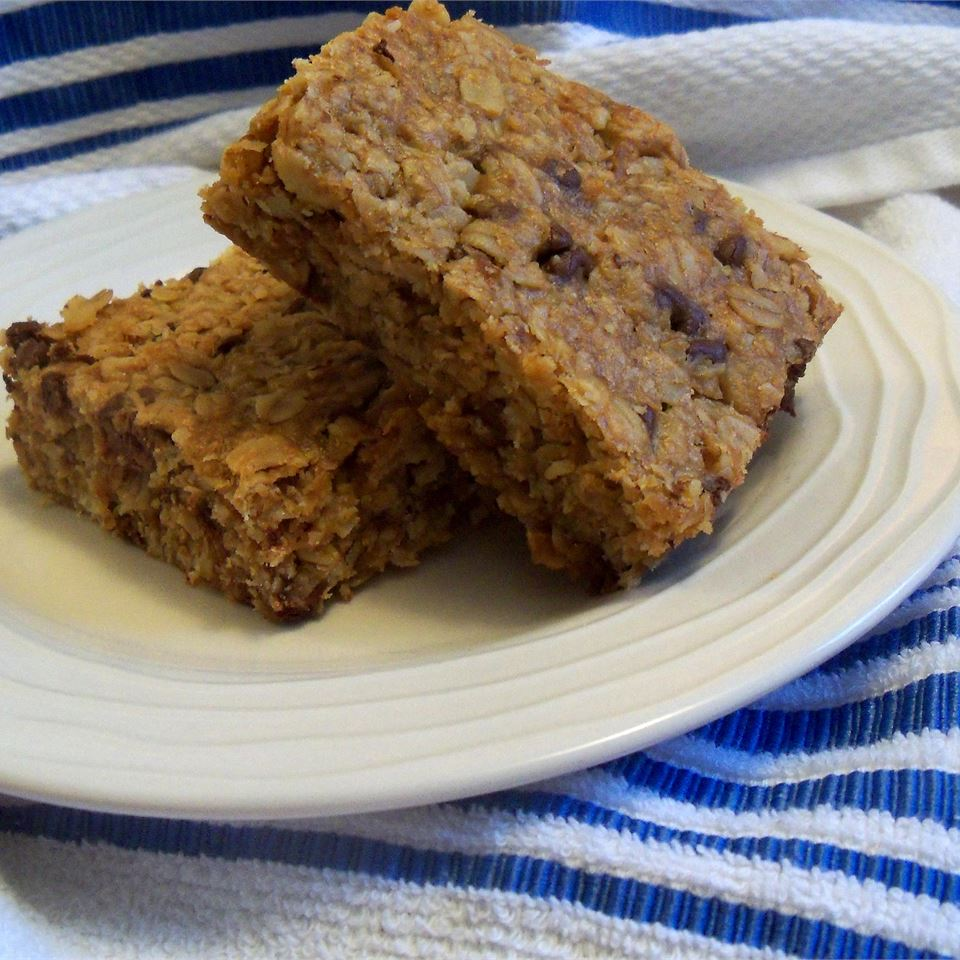

Oatmeal Peanut Butter Bars

Description:
The best granola bars in the world, it makes a great snack in the afternoon.
Ingredients:
- 1 Cup Peanut Butter
- 1/2 Cup Packed Brown Sugar
- 1/2 Cup Corn Syrup
- 1/3 Cup Butter
- 2 Teaspoons Vanilla Extract
- 3 1/3 Cups Rolled Oats
- 1/2 Cup Flaked Coconut
- 1/2 Cup Sunflower Seeds
- 1/2 Cup Raisins
- 1/2 Cup Semisweet Chocolate Chips
Steps:
- Preheat oven to 350 degrees F (175 degrees C).
- In a large bowl stir together the peanut butter, the butter or margarine, the brown sugar, the syrup and the vanilla until smooth.
- Add all the other ingredients. Stir well.
- Press the mixture into 13 x 9 inch greased pan. Bake for 20-25 minutes. Let cool on wire rack before cutting into bars.